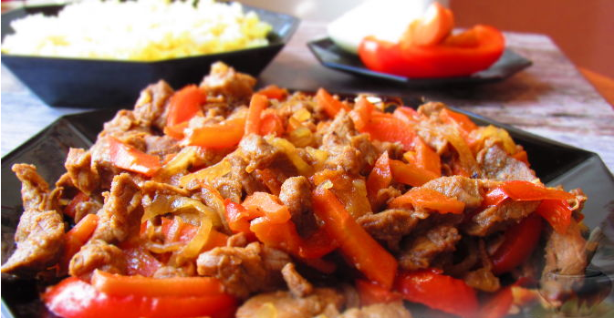

Ингредиенты (4 порции):
Свинины - 700 гр
Перец болгарский - 1 шт.
Морковь - 1 шт.
Лук репчатый - 1 шт.
Чеснок - 1 зубок
Соус соевый - 5 ст.л.
Лимон (сок лимона) - 1 шт.
Мед - 3 ст. л.
Смесь перцев молотых - по вкусу
Масло растительное - для жарки
Соль - по вкусу
Приготовление:
1. Говядину вымыть, обсушить и нарезать небольшими кусочками.1. Мясо нарезать тонкими продолговатыми полосками.
2. Приготовить маринад. Для этого перемешать соевый соус, сок одного лимона и мед. Залить маринадом мясо.
3. Добавить мелко рубленный чеснок и дать промариноваться около 30 минут.
4. Тем временем нарезать лук полукольцами.
5. Морковь нарезать брусочками.
6. Перец - соломкой.
7. Обжарить мясо на растительном масле почти до готовности (маринад пока что в сковороду не выливать).
8. Обжаренное мясо выложить на тарелку. В этой же сковороде слегка обжарить все нарезанные овощи.
9. Затем добавить мясо и влить маринад.
10. Протушить мясо с овощами около 7 минут. По желанию досолить и добавить молотый перец.
11. К такому мясу по-тайски на гарнир отлично подойдет рассыпчатый рис. Приятного аппетита!